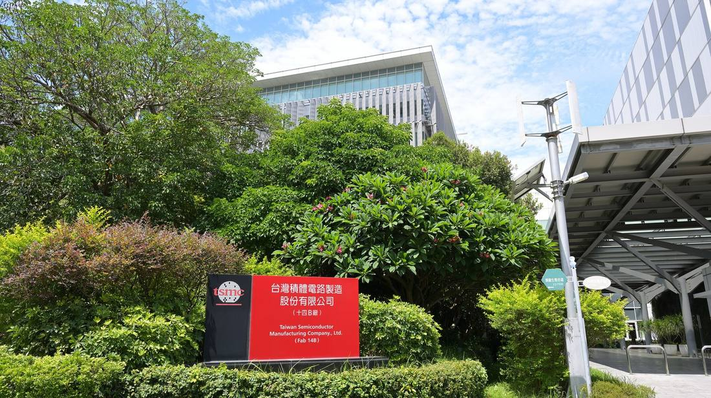
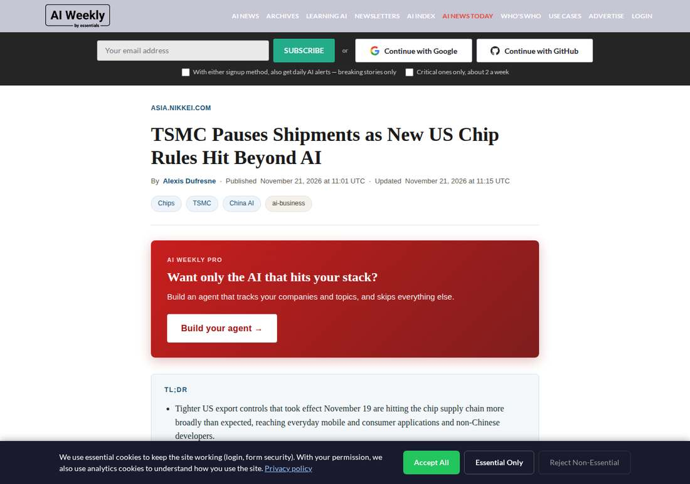

TSMC and Samsung Pause Chip Shipments as New US Export Rules Reach Beyond AI
A BIS interim final rule effective November 19, 2026 removed the verification routes foundries used to clear advanced-node chips as uncontrolled, and TSMC and Samsung paused some shipments to Chinese customers while seeking US licences. Nikkei Asia reported on November 20 that the rules also reach consumer chips and non-Chinese developers, pushing Chinese designers back to 28nm and 40nm nodes.

- 01THE RULE — On November 16, 2026, BIS released the interim final rule; the Federal Register published it on November 19, 2026 (91 FR 74970, document 2026-23529), effective on publication, rescinding the AI Diffusion Rule.
- 02THE PAUSE — On November 19, 2026, the Financial Times reported TSMC and Samsung told Chinese clients they would halt sales of certain processors while seeking US Commerce licences; Reuters reported TSMC halted 16nm-and-below orders from affected Chinese designers.
- 03THE WIDENING — On November 20, 2026, Nikkei Asia reported the rules reach everyday mobile and consumer applications and developers beyond China, with TSMC holding shipments to several Chinese and non-Chinese developers pending a compliance review.
WHAT HAPPENEDWhat Happened
The US Commerce Department's Bureau of Industry and Security published an interim final rule on November 19, 2026 that rewrites how advanced chips reach China, and within a day the world's two largest advanced-node foundries stopped moving product. The Financial Times reported on November 19 that TSMC and Samsung told Chinese clients they would halt sales of certain processors while they apply for licences from the US Commerce Department.
The rule's foundry change is the trigger. A fabricator must now presume that any logic chip made at the 16 or 14 nanometre node or below is a controlled data-centre AI chip unless it shows otherwise, and the rule removes two of the three routes that used to overcome that presumption for designers in restricted destinations. Reuters reported that TSMC halted orders from affected Chinese designers on 16nm processes and below unless they hold US export licences, and that no mainland Chinese company appears on the US list of approved chip designers.
The disruption is wider than the AI chips Washington targeted. Nikkei Asia reported on November 20 that the rules are reaching everyday mobile and consumer applications and developers beyond China, and that TSMC has put shipments to several Chinese and non-Chinese chip developers on hold while it reviews compliance. Seoul Economic Daily reported that Samsung halted shipments to Baidu's Kunlun AI unit and ByteDance, and that TSMC supplies smartphone chips to Xiaomi, Oppo and Vivo. One lawyer told the Financial Times that both foundries must now apply for licences even for consumer chips made on advanced processes.
WHY IT MATTERSThe verification route is gone, and that is the real change
The headline is a shipment pause; the mechanism is the removal of self-verification. Chinese designers used to route orders through independent packaging and testing firms that would certify a chip fell outside US controls. The new rule bars that route for designers in restricted destinations, so the foundry itself must now treat advanced-node silicon as licence-bound unless the developer sits on a US whitelist.
That turns a targeted AI-chip control into a general foundry compliance problem. Consumer SoCs, autonomous-driving chips and other everyday silicon on 14 or 16nm and below are now caught in the same presumption, and designers outside China are affected too. Chinese designers are effectively pushed back to older 28nm and 40nm nodes, and TSMC is tightening screening of customers' operating locations, parent companies, shareholders, packaging providers and shipping routes, including orders placed through intermediaries.
WHAT IS STILL UNKNOWNLicences, not a ban, will decide how bad this gets
Neither TSMC nor Samsung has said which product lines are frozen, and the pause is framed as pending licences rather than a permanent stop. Industry sources told the Financial Times that Commerce is likely to grant licences for smartphone chips, but that approval delays could disrupt production. Shipments already in transit on November 19 may proceed under the old terms until December 21, 2026, and BIS is taking comments on the rule until January 19, 2027.
The rule also reaches beyond the foundries. It adds a licence requirement for advanced semiconductors going to Indonesia, Malaysia, Singapore, Thailand and Brazil, restricts exports to overseas data centres that give significant compute access to companies headquartered in Macau or Country Group D:5, and formally rescinds the Biden-era AI Diffusion Rule, including the model-weights control and the Data Center Validated End User framework. China's Commerce Ministry has vowed countermeasures. The next events to watch are the first licence decisions, any TSMC or Samsung statement naming frozen lines, and Beijing's response.
SIGNAL JUDGMENT — ANALYSISA paperwork change just became a supply-chain event
Tokenta Signal's judgment: the consequential part of this rule is not the new licence requirement, it is the deleted escape hatch. As long as foundries could certify a chip as non-AI through a packager, the control stayed narrow; once that route closed, every advanced-node order became a licence question, and the two foundries that make nearly all of it stopped shipping first and asked later. The claim to discount is any version of this story that calls it a blanket ban on China chips, because it is a licence queue with a likely-grant path for consumer silicon. The claim to act on is the widening: smartphone SoCs and non-Chinese developers are now in scope, so the disruption to watch is production delays and licence backlogs, not a single headline pause.
WHAT REMAINS UNCERTAINWhat Remains Uncertain
EVIDENCEEvidence

TSMC and Samsung suspended some chip shipments to Chinese customers after a US BIS interim final rule took effect on November 19, 2026, narrowing how foundries can show advanced-node chips are uncontrolled; Nikkei Asia reported on November 20 that the rules reach consumer chips and non-Chinese developers too.
PRIMARY SOURCESPrimary Sources
- Federal Register: Addressing Remote Access to Advanced Semiconductors, BIS interim final rule, November 19, 2026
https://www.federalregister.gov/documents/2026/11/19/2026-23529/addressing-remote-access-to-advanced-semiconductors - CASRAI: TSMC, Samsung Halt Some China Chip Shipments
https://casrai.org/news/tsmc-samsung-suspend-china-chip-shipments-bis-rule-2026 - AI Weekly: TSMC Pauses Shipments as New US Chip Rules Hit Beyond AI (Nikkei Asia relay)
https://aiweekly.co/alerts/tsmc-pauses-shipments-as-new-us-chip-rules-hit-beyond-ai